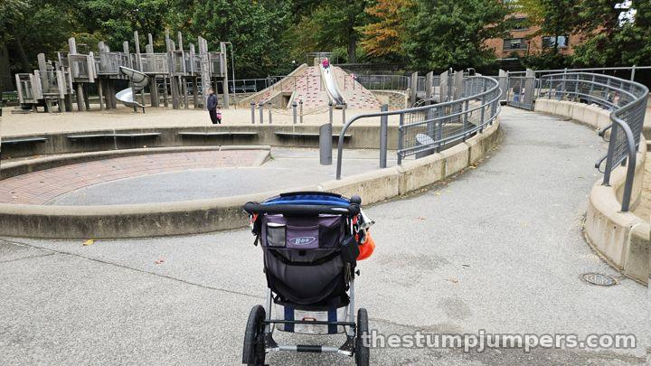
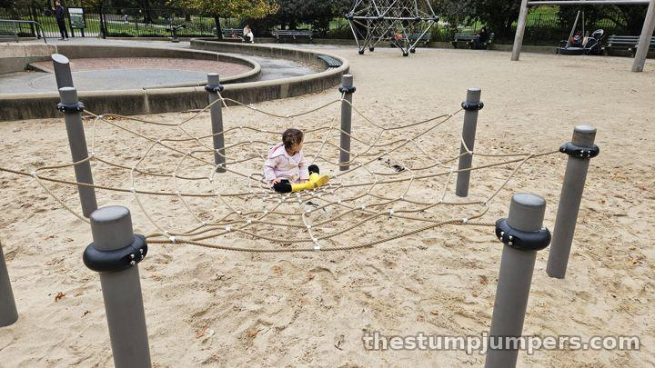
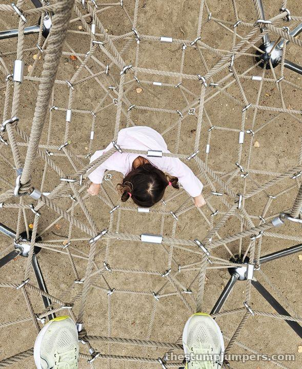
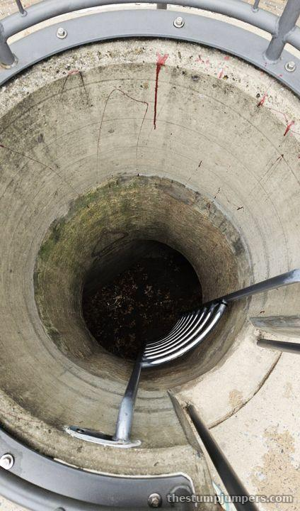

Tarr Family Playground: The Racetrack

Tarr Family Playground sits on Central Park's West Side at 100th Street, and it's very easy to get to from Central Park West or the park loop. At first glance it looks like a pretty common playground. Look a little closer and there are some fun features: a spider web, a little jacks maze, and a bridge with lots of ways to climb over it. Some descriptions call the wooden structure a treehouse, but it's a far cry from a treehouse. It's fun, and it's partially made of wood, but that doesn't make it a treehouse.

I call this one the racetrack. A path wraps around the whole playground with a very fun swirl that takes kids down, around, and under a bridge, and kids on bikes love it. Keep an eye on toddlers, since the bikes are usually zooming around. If your kid is a little bigger, check that they can actually fit under the bridge. I've seen some head-bangers.


It's well laid out, with one entrance and exit and good visibility of the whole playground, except in the murder tunnel. The murder tunnel has blood stains. We just pretend it's a volcano and that's lava.

The playground first opened in 1973 as an adventure-style design, and the equipment is stamped 2008, right around when the Central Park Conservancy rebuilt it. It's very clean, it doesn't get too busy, and it usually has a nice crowd of upper UWS locals. The Tarr name is on three Central Park playgrounds (this one, Tarr-Coyne Tots, and Tarr-Coyne Wild West), so somebody in that family really likes playgrounds.
There are no bathrooms nearby that I know of. It's a bit of a hike to the nearest public restrooms in the park.
Verdict: not worth a trip, but not a bad playground by any means. If you live nearby or you're already running the loop, it's a solid stop.
The Stump Report
Biking & Running There
On the run: that's how we came, with the jogging stroller. It's very easy to reach from the Central Park loop or Central Park West. By bike: same deal; the loop drive runs right by. By train: B or C to 96 St or 103 St, then walk to Central Park West & 100th St.